Agro Wisata Desa Mabulugo
Rencana pengembangan daya tarik wisata alam, perkebunan, dan wisata buatan.
Isi halaman ini bersumber dari Dokumen Rencana Pengembangan Daya Tarik Wisata/Desa Wisata Mabulugo, Dinas Pariwisata Provinsi Sulawesi Tenggara (CV. Kodekaca Indonesia), Juli 2025. Seluruh gambar adalah rancangan (render), bukan foto kondisi terbangun. Jam buka dan tarif belum ditetapkan.
Wisata Alam, Perkebunan, dan Wisata Buatan
Desa Mabulugo ditetapkan Pemerintah Kabupaten Buton sebagai Desa Wisata dengan potensi wisata alam dan budaya. Rencana ini menata kawasan agar wisata rekreasi buatan di Zona A menjadi daya tarik utama bagi kawasan persawahan dan perkebunan di Zona B.
Penataan memakai dua prinsip: pembangunan kepariwisataan berkelanjutan dan pariwisata berbasis masyarakat. Rancangan bangunan memadukan tipologi bangunan tradisional ke dalam bentuk modern.
Area perencanaan DTW alam dan perkebunan
Tapak prioritas, 150 m × 100 m
Zona A wisata alam & buatan, Zona B alam & perkebunan
Penetapan Desa Wisata, 24 Januari 2023
Tata Letak Area Prioritas
Dua pintu masuk dan keluar di sisi barat laut dan timur, parkir di tepi kawasan, dan zona persawahan di bagian selatan.
Keterangan
- 1Pintu masuk dan keluar
- 2Parkiran kendaraan
- 3Tempat bilas / KM / WC umum
- AGedung teknisi
- BGedung pengelola, informasi, perpustakaan
- CBaruga pertemuan
- DRestoran / UMKM
- ESoccer mini / lapangan sepak bola mini
- FMusholah
- GAmphitheater
- HRestoran, coffee shop / UMKM
- IKolam renang dewasa & anak-anak
- JSpot gazebo sawah
- KGlamping
- LKolam ikan
- MGazebo kolam renang
- NPendopo kolam renang
- OArea pemancingan
- PAviari kebun buah
Enam Zona dan Program Ruangnya
Zona Penerima
Pintu gerbang masuk, parkiran, informasi center, penjualan karcis masuk, ruang service.
Zona Rekreasi Permandian Buatan
Kolam renang dewasa dan anak, gazebo, pendopo, ruang ganti dan KM/WC, playground air, spot foto.
Zona Wisata Olahraga
Lapangan bola mini, tribun, ruang ganti dan KM/WC.
Zona Wisata Pemancingan
Kolam pemancingan, toko peralatan pancing, coffee shop dan KM/WC.
Zona Wisata Kuliner
Restoran dan UMKM, gedung pertemuan, ruang informasi budaya dan daerah, taman buah dan aviari, ruang service.
Zona Wisata Persawahan
Amphitheater / panggung atraksi budaya, restoran, coffee shop dan UMKM, musholah, glamping persawahan, ruang service.
Render Area Prioritas
Klik gambar untuk melihat ukuran penuh.
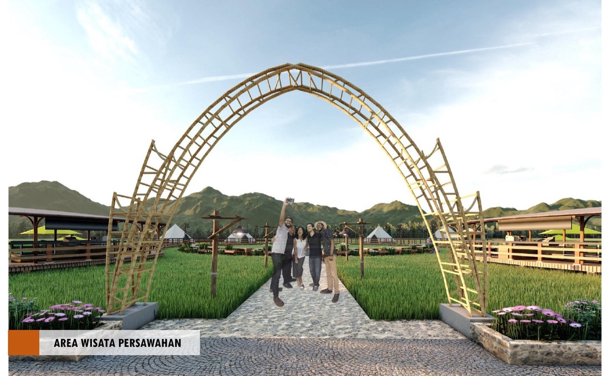
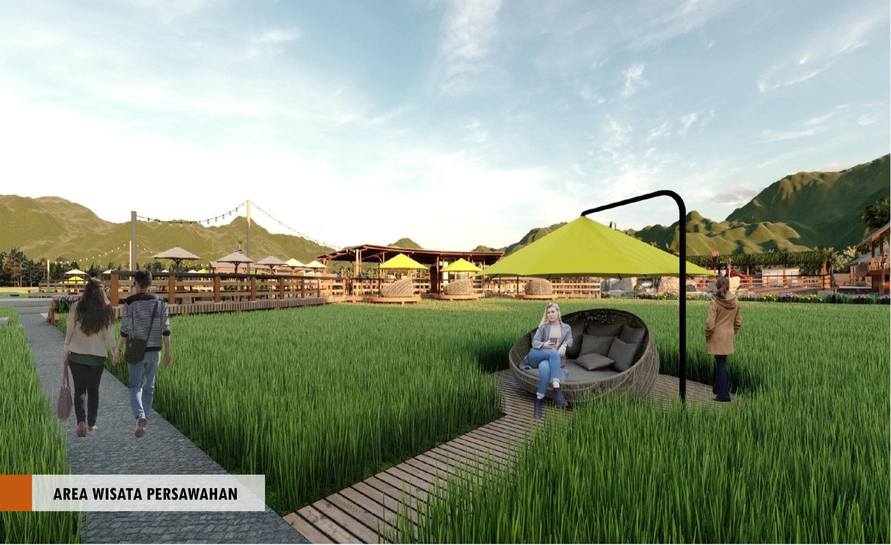
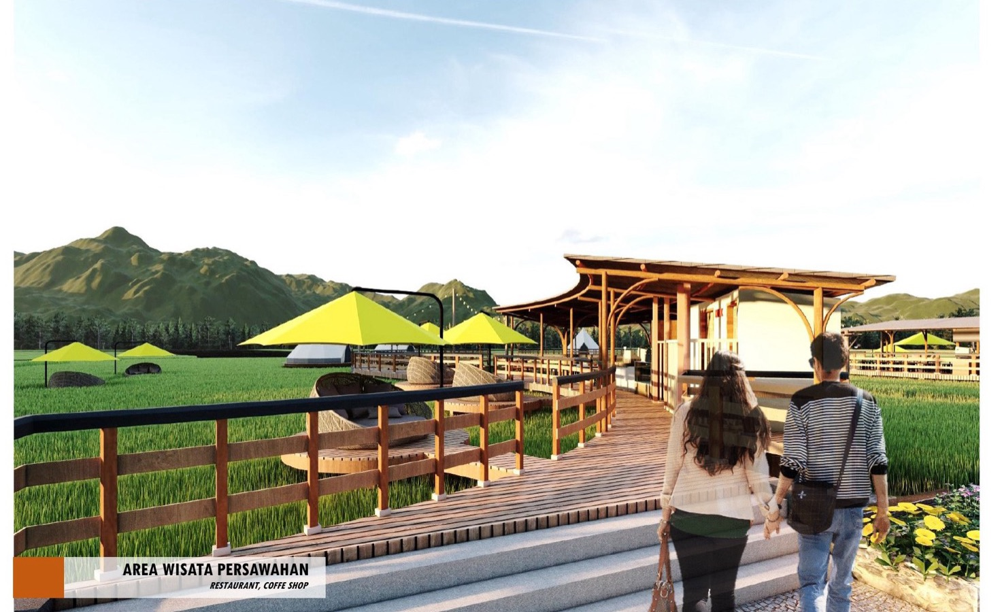
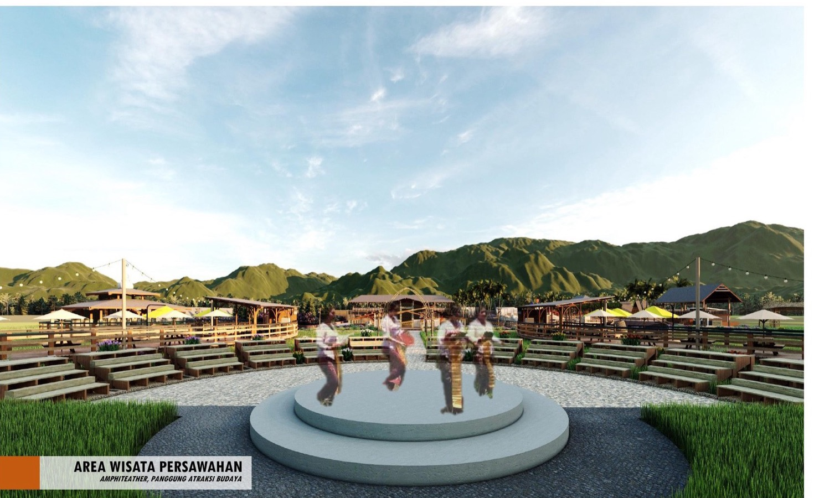
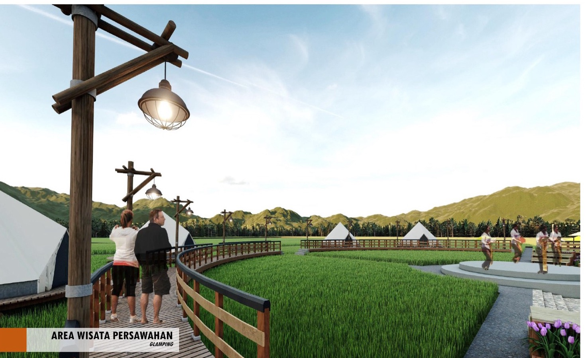
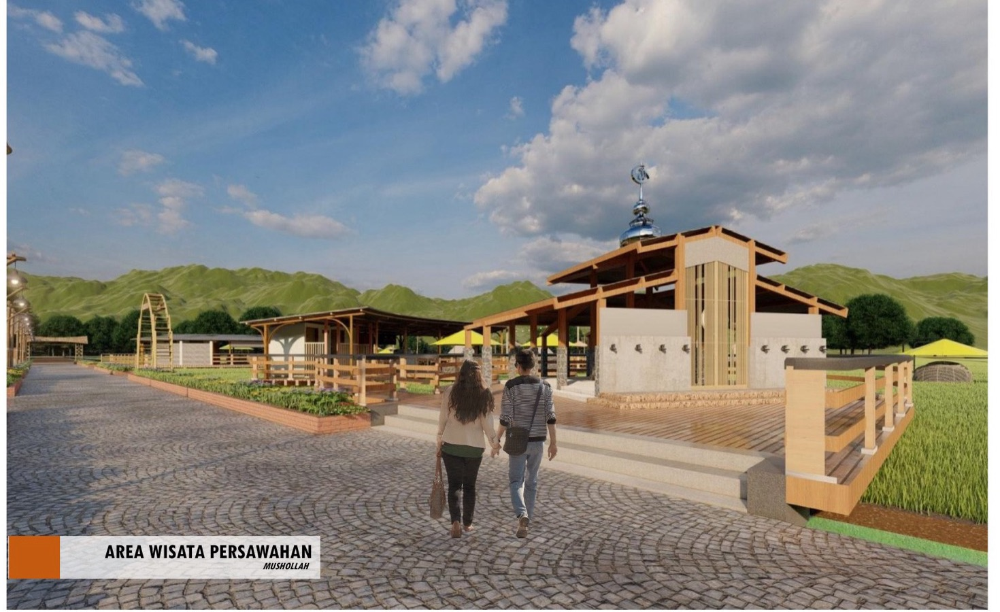

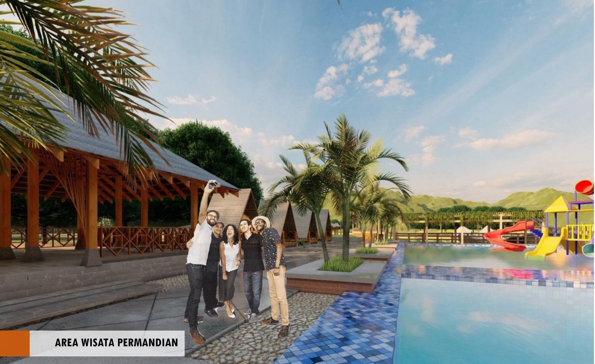
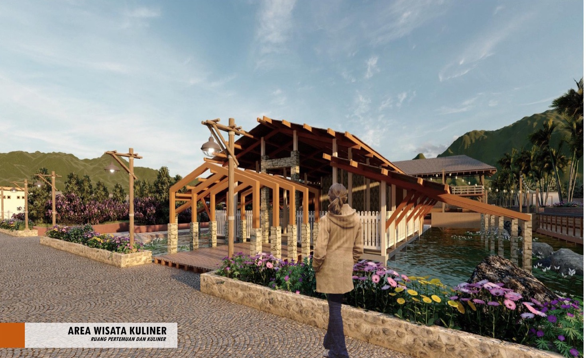
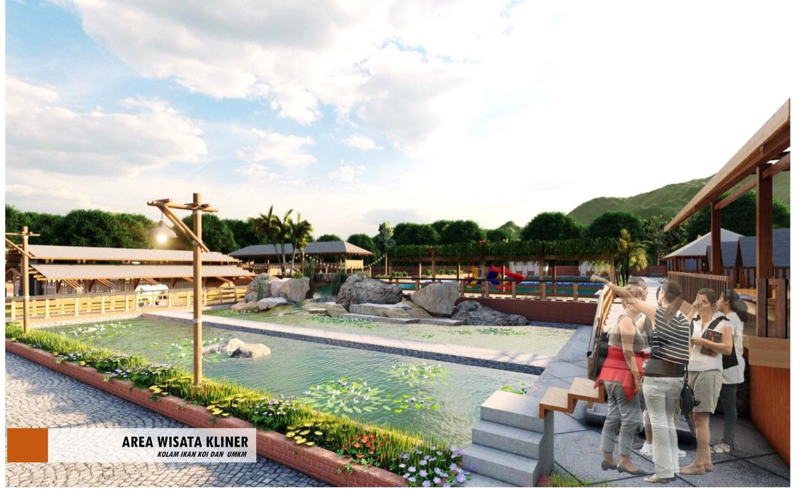
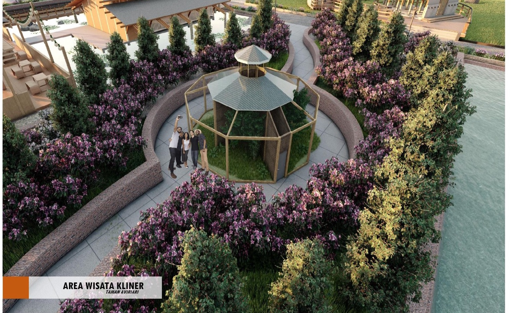
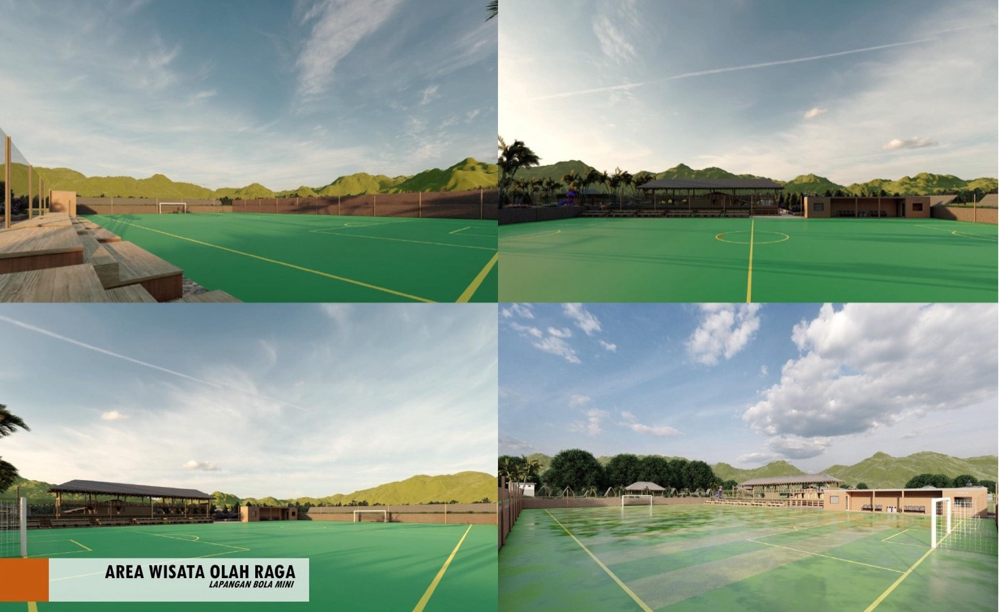
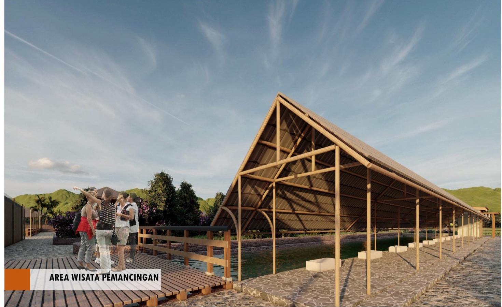
Lokasi Tapak Perencanaan
Tapak seluas 1,48 ha (150 m × 100 m) berada di tengah area persawahan. Akses melalui jalan lingkungan perdesaan yang baru sebagian beraspal dan masih dalam pengerasan. Kawasan ini menjadi lokasi program prioritas pembangunan dan pengembangan daya tarik wisata Desa Mabulugo.
Ilustrasi konsep lain
Render konsep awal yang berbeda dari dokumen di atas (kolam renang berseluncur, pondok panggung, kolam ikan, lapangan futsal, lapak kuliner). Belum menjadi bagian rencana resmi.